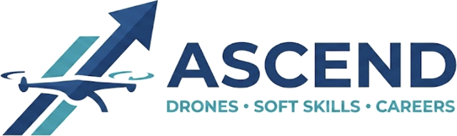

ASCEND
Fundador y director, con María Ruiz Ramos
+400jóvenes formados
- Qué hice
- Programa experiencial de liderazgo y soft skills con drones para jóvenes de 15 a 25 años. Diseñamos la metodología, facilitamos las sesiones y buscamos centros, también en India y Seúl.
- Qué aporta a tu empresa
- Sé formar a gente joven y sacar lo mejor de un equipo: cómo se acompaña a alguien que empieza y qué hace que se quede. Es la base para atraer y retener aprendices en la empresa.